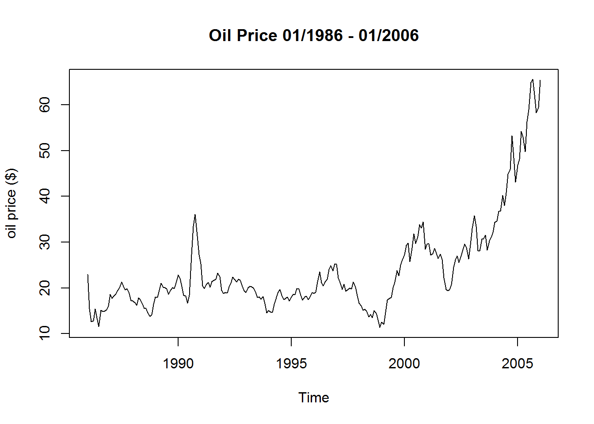
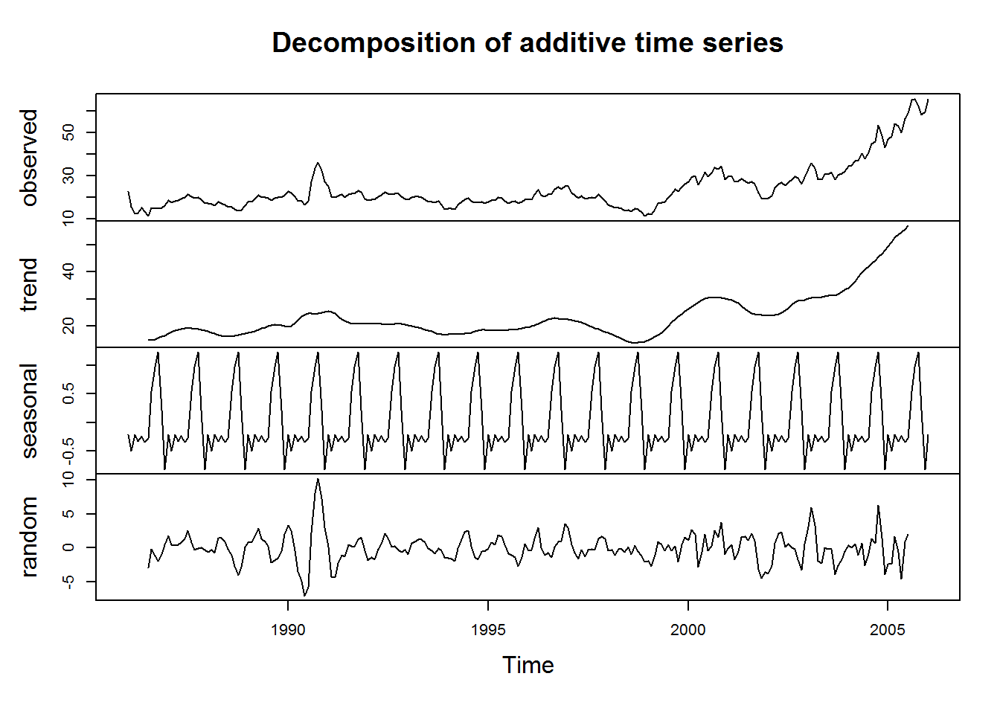
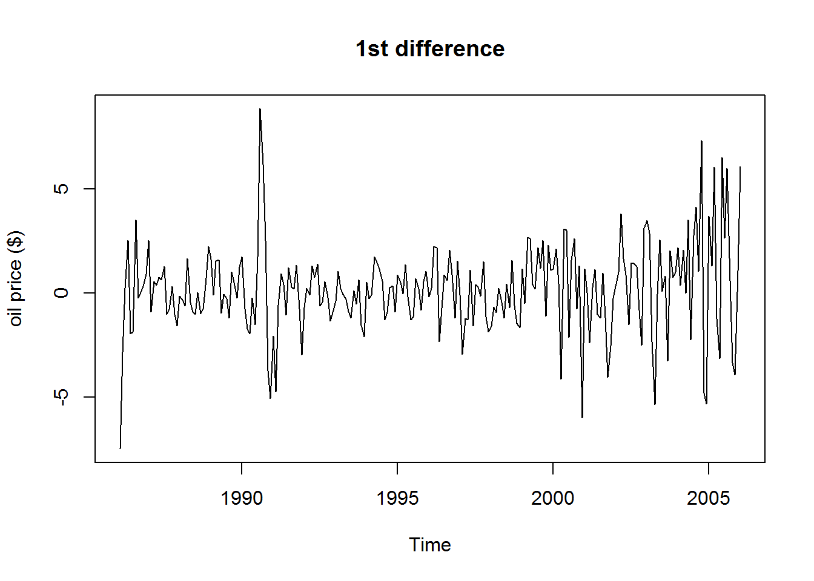
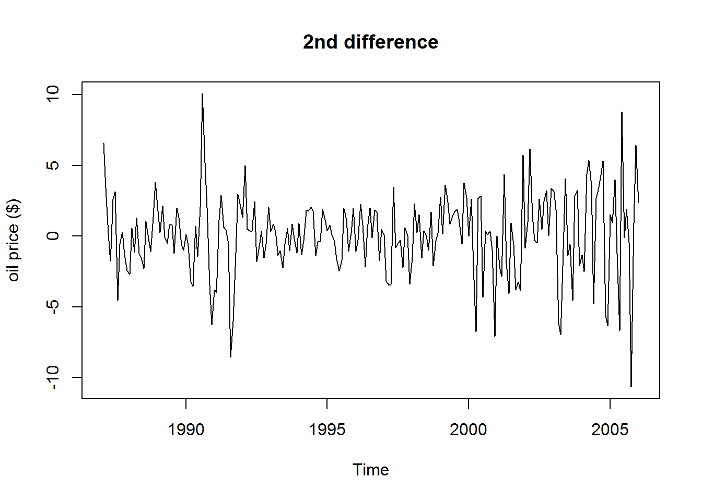
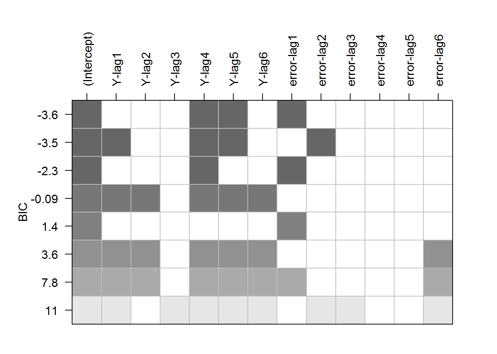
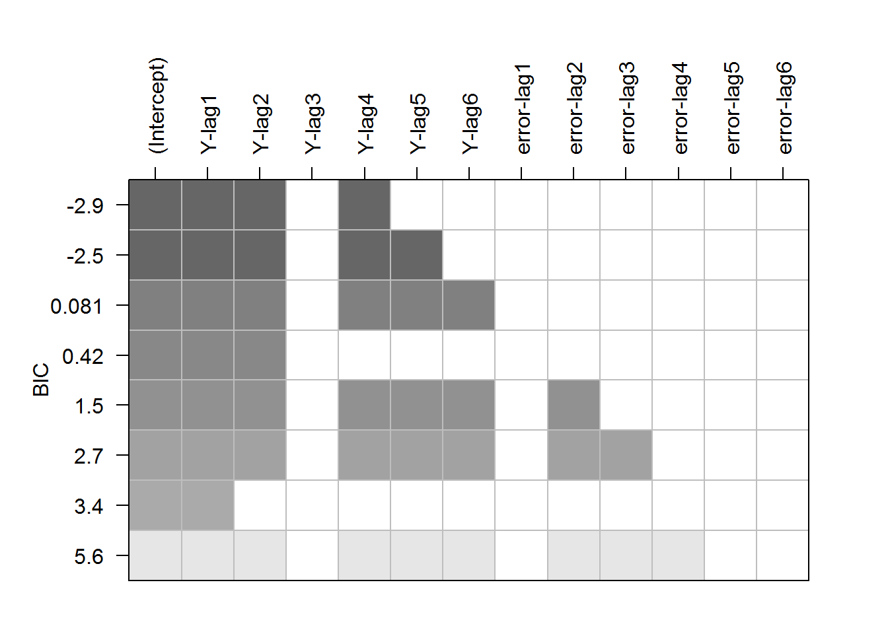
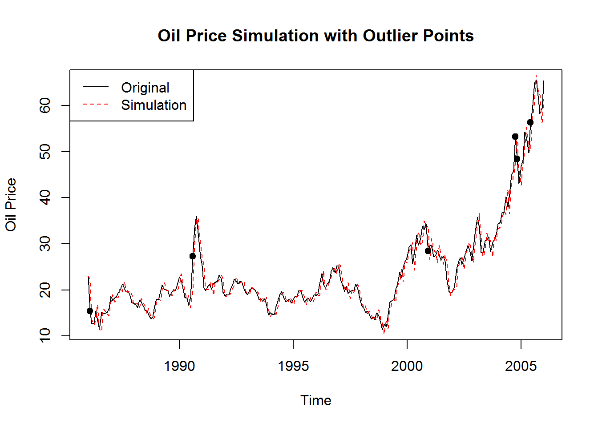
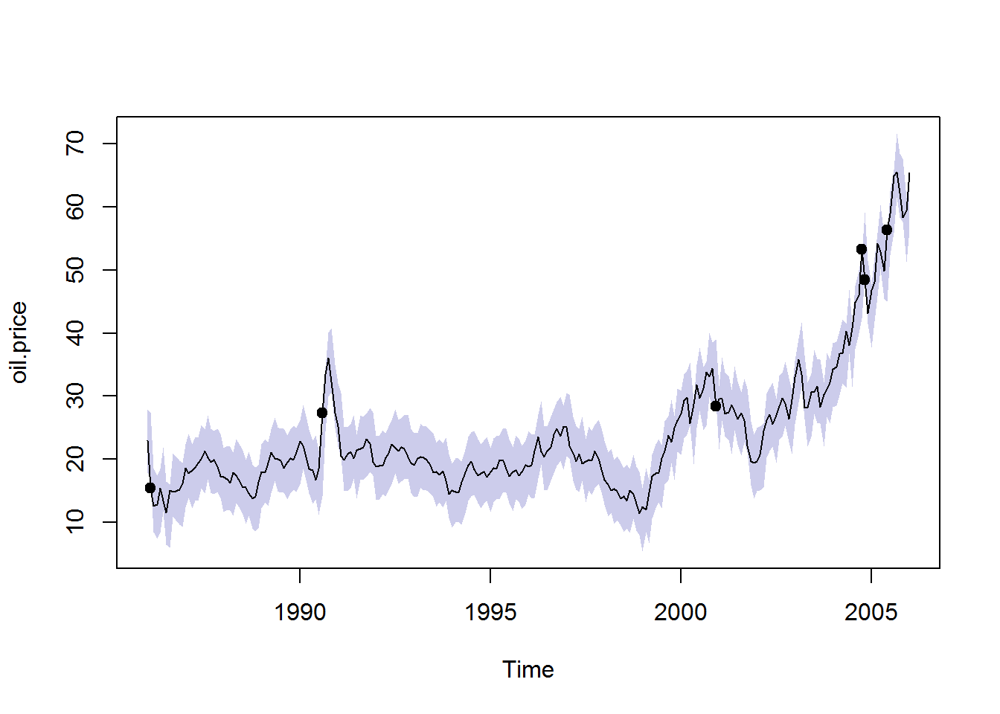
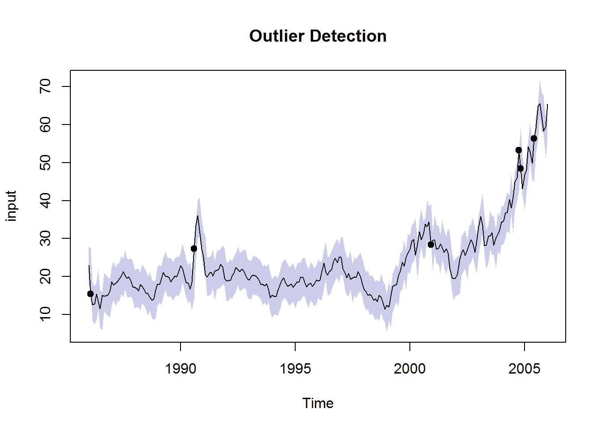

oil.price, from R library TSA.
1. Visualize the time series
library(TSA)
data("oil.price")
plot(oil.price,ylab="oil price ($)",main="Oil Price 01/1986 - 01/2006")
2. Decompose the time series
plot(decompose(oil.price))
3. Extract the general trend and periodical trend
#remove linear trend
diff1.oil.price=diff(oil.price)
plot(diff1.oil.price,ylab="oil price ($)",main="1st difference")
#remove seasonal trend
diff2.oil.price=diff(diff1.oil.price,lag=12)
plot(diff2.oil.price,ylab="oil price ($)",main="2nd difference")
4. Fit a time series model to the remaining residuals
plot(armasubsets(diff1.oil.price,6,6))
f1=arima(oil.price,order=c(5,1,1),fixed=c(0,0,0,NA,NA,NA))
plot(armasubsets(diff2.oil.price,6,6))
f2=arima(oil.price,order=c(4,2,0),fixed=c(NA,NA,0,NA))
AIC(f1);BIC(f1)## [1] 1027.163## [1] 1041.085AIC(f2);BIC(f2)## [1] 1092.394## [1] 1106.3mean(diff1.oil.price);mean(diff2.oil.price)## [1] 0.1772917## [1] 0.1005263f1 is better than f2, although the second differencing with lag=12 has a smaller mean value.5. Use the model to determine if a data point is an outlier
fitted=fitted(f1)
plot(oil.price,main="Oil Price Simulation with Outlier Points",ylab="Oil Price")
lines(fitted,col=2,lty=2)
legend("topleft",legend=c("Original","Simulation"),lty=1:2,col=1:2)
upper=fitted+2.5*sqrt(f1$sigma2)
lower=fitted-2.5*sqrt(f1$sigma2)
out=(oil.price<lower|oil.price>upper)
which(out==TRUE)## [1] 2 56 180 226 227 234points(time(oil.price)[out],oil.price[out],pch=19)
6. Detect outliers in the following time series
plot(oil.price,type="n",ylim=range(lower,upper))
polygon(c(time(oil.price),rev(time(oil.price))),c(upper,rev(lower)),col=rgb(0,0,0.6,0.2),border=FALSE)
lines(oil.price)
points(time(oil.price)[out],oil.price[out],pch=19)
1. Algorithm Design
f=function(input){
#diff1 is normal difference of input data, diff2 is seasonal difference of diff1
diff1=diff(input)
diff2=diff(diff1,lag=12)
#Let f1 be the ARIMA model based on diff1 and f2 be the ARIMA model based on diff2.
#ARMA subset summary does not give in descending order of BIC, so determination of the row with smallest BIC value is necessary. Fortunately, the 6th section of the summary is BIC value.
temp=summary(armasubsets(diff1,6,6))[[6]]##get all BIC values
temp=which(temp==min(temp))##pick out the smallest one
#The 1st section of the summary is AR and MA part. TRUE indicates shaded box from the plot.
f1.ar=summary(armasubsets(diff1,6,6))[[1]][temp,2:7]
f1.ar=unname(f1.ar)#get shaded box logic value for AR part of f1
f1.ma=summary(armasubsets(diff1,6,6))[[1]][temp,8:13]
f1.ma=unname(f1.ma)#get shaded box logic value for MA part of f1
#Same for f2
temp=summary(armasubsets(diff2,6,6))[[6]]
temp=which(temp==min(temp))
f2.ar=summary(armasubsets(diff2,6,6))[[1]][temp,2:7]
f2.ar=unname(f2.ar)
f2.ma=summary(armasubsets(diff2,6,6))[[1]][temp,8:13]
f2.ma=unname(f2.ma)
remove(temp)
#Now, shaded boxes for both f1 and f2 are ready. Need to determine order and fixed position of AR and MA.
f1.ar.position=which(f1.ar==TRUE)
if (length(f1.ar.position)!=0){f1.ar.order=max(f1.ar.position)}
if (length(f1.ar.position)==0){f1.ar.order=0}
f1.ma.position=which(f1.ma==TRUE)
if (length(f1.ma.position)!=0){f1.ma.order=max(f1.ma.position)}
if (length(f1.ma.position)==0){f1.ma.order=0}
f1.fixed.length=f1.ar.order+f1.ma.order
f1.fixed=rep(0,f1.fixed.length)
f1.fixed[c(f1.ar.position,f1.ar.order+f1.ma.position)]=NA
f2.ar.position=which(f2.ar==TRUE)
if (length(f2.ar.position)!=0){f2.ar.order=max(f2.ar.position)}
if (length(f2.ar.position)==0){f2.ar.order=0}
f2.ma.position=which(f2.ma==TRUE)
if (length(f2.ma.position)!=0){f2.ma.order=max(f2.ma.position)}
if (length(f2.ma.position)==0){f2.ma.order=0}
f2.fixed.length=f2.ar.order+f2.ma.order
f2.fixed=rep(0,f2.fixed.length)
f2.fixed[c(f2.ar.position,f2.ar.order+f2.ma.position)]=NA
#Now f1 and f2 could be set
f1=arima(input,order=c(f1.ar.order,1,f1.ma.order),fixed=f1.fixed)
f2=arima(input,order=c(f2.ar.order,2,f2.ma.order),fixed=f2.fixed)
#Compair BIC of both f1 and f2, and let the one with smaller BIC value be the optimize simulation model
if (BIC(f1)<=BIC(f2)){fit=f1}
if (BIC(f1)>BIC(f2)){fit=f2}
return(fit)
}
ff=function(input){
fit=f(input)
fitted=fitted(fit)
upper=fitted+2.5*sqrt(fit$sigma2)
lower=fitted-2.5*sqrt(fit$sigma2)
out=(input<lower|input>upper)
#Return position of outliers
which(out==TRUE)
#Return graph
plot(input,type="n",ylim=range(lower,upper),main="Outlier Detection")
polygon(c(time(input),rev(time(input))),c(upper,rev(lower)),col=rgb(0,0,0.6,0.2),border=FALSE)
lines(input)
points(time(input)[out],input[out],pch=19)
return(which(out==TRUE))
}2. Test
library(TSA)
data("oil.price")
input=oil.price
ff(input)
## [1] 2 56 180 226 227 234